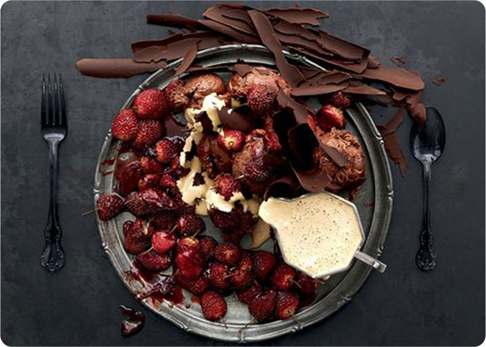

Works

Graphic Design
Graphic design is the process of visual communication, and problem-solving through the correct use of typography, space, image and color. The field is considered a subset of visual communication and communication design, but sometimes the term "graphic design" is used interchangeably with these due to overlapping skills involved. Graphic design often refers to both the process (designing) by which the communication is created and the products (designs) which are generated.
About
me
80
illustrator40
After Effects90
Photoshop90
Dreamweaver50
HTML5/CSS3
ROSE CHEN (陈蓉)
- 2016~NowDesigner
- 2013~2016Full Time Mother
- 2006~2013Department Manager (Hengtian)
- 2006~2013STE (Microsoft Beijing/IGS)
- 2002~2006Computer Science (ZJU)
abstract
A confident mommy in pursuit of being an outstanding designer